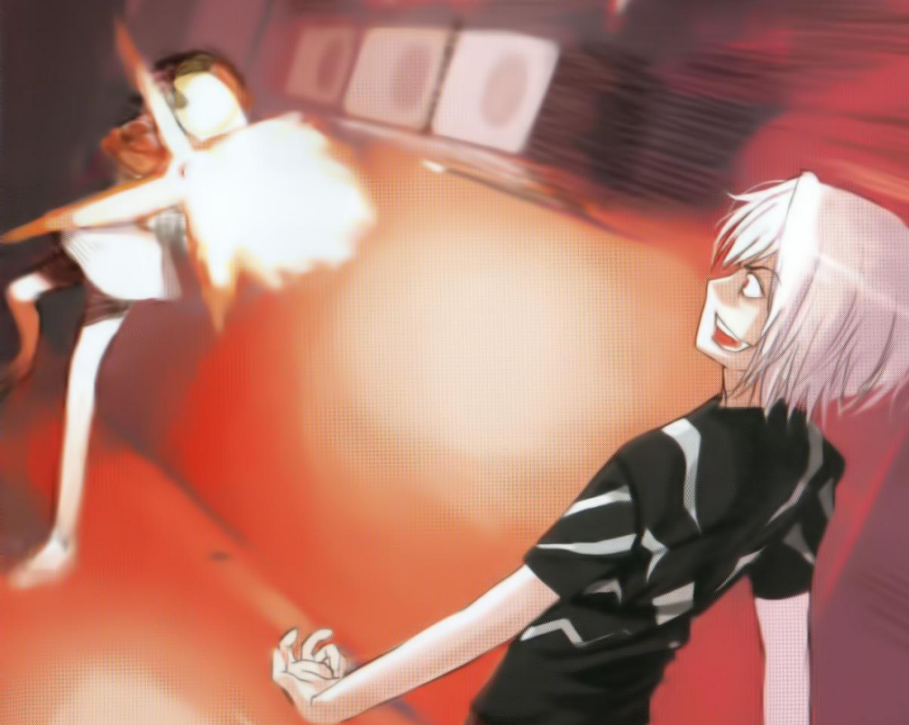
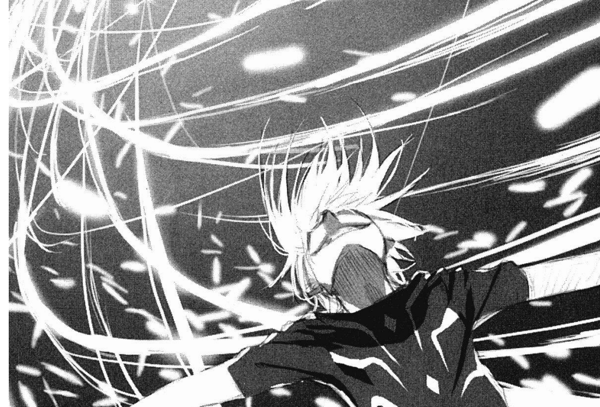
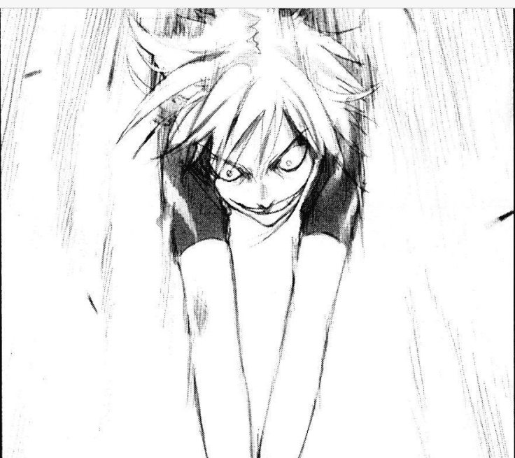
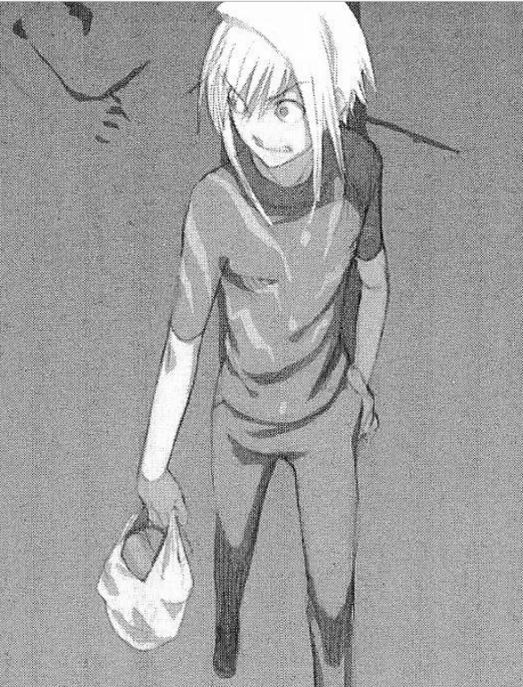
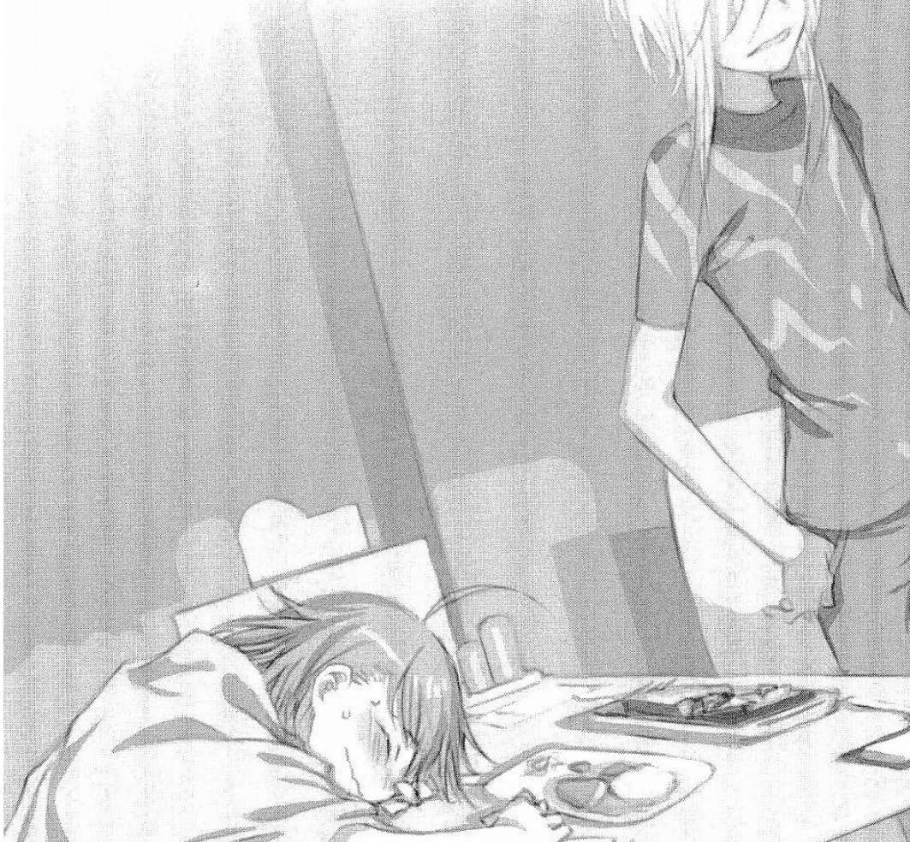
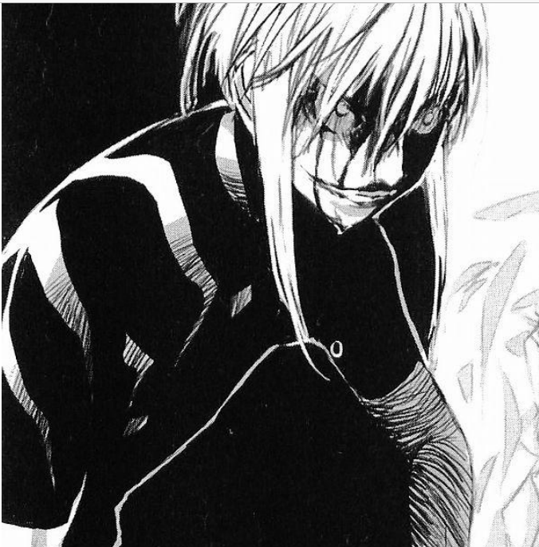

En este volumen de la historia conocemos el esper más fuerte de CiudadAcademia, un ser visto como un monstro incluso por
otro esper como el, él se ha ganado esa reputación a base de nunca perder peleas y donde los resultados de estas
con horribles. En ningún momento nos regalan información confiable, en realidad este es un apodo, no sabemos
su nombre real de qué lugar es, o porque es tan fuerte, la poca información que conocemos de su pasado, es un recuerdo que tiene
el mismo, donde al parecer ya tiene sus poderes a corta edad, los cuales hacen poder resistir la explosión de una bomba nuclear estando
en el centro de esta, sabemos además que sus poderes son de tipo psíquico, ya que en realidad existen varios tipos contados
y por últimos se nos da a entender que el es, el esper más avanzado en cuestiones de desarrollo de poderes, lo cual
lo vuelve el más apto para el experimento conocido como nivel 6 upper, en CiudadAcademia, solo hay hasta nivel 5, donde
se piensa que el nivel 6 sería algo así como un dios, según Accelerator el solo está en el mismo nivel que el demás nivel
5, porque no hay nada más arriba, y es verdad, él es mucho más fuerte que todos y con sus poderes de manipular vectores
se vuele casi indestructible. El proyecto de nivel 6, dice que se tendría que ganar 7 peleas y en cada una pelear
en contra Misaka Mikoto, el problema es que solo existe una de ellas.

Accelerator peleando contra clon en uno de los experimentos
No es sino hasta que después de unas pruebas, se tratan de hacer clones de Misaka, engañándola para que ella diera su código
genético, pero al final los clones, no tenían los mismos poderes, así que, al tener clones muy débiles, como máximo de nivel 3
Accelerator no obtendría los resultados esperados, al final el podría conseguirlo solo, pero esto le tomaría 200 años, y no
había tiempo para ello, por lo que, con otros cálculos, se llegó a la conclusión de que se debían derrotar a 20,000
de esos clones en diversos escenarios para alcanzar el nivel 6. En CiudadAcademia hay un refrán que dice: el original es
mejor que 10,000 clones y para Accelerator, estos clones eran solo muñecas para cumplir con el fin de ser el primer nivel
6.

Accelerator concentrando plasma al final de la batalla con kamijou
Como ya se abordó en la historia de KamijouTouma, Accelerator fue derrotado por un nivel 0, lo cual hizo que el proyecto
fuera cancelado por parecer ilógico seguir al ver como el más fuerte de CiudadAcademia cae ante un nivel 0 que ni siquiera
tiene poderes, a pasar eso no se supo nada de él, pero si se sabía que estaba por las calles ahora con una lección aprendida.
En cierta medida, para alcanzar ese nuevo nivel resultaría en que ya nadie pudiera detenerlo, ser el más fuerte
de este lugar no era suficiente, ya que, aunque a él le costara admitirlo, no soportaba ver a los estudiantes de esta
ciudad usados como conejillos de indias, a diferencia de Kamijou, el había visto cosas horribles desde que era niño y la
violencia era el único camino a tomar para lograr un mundo donde los niños no tengan que terminar como él. Accelerator siempre
trato que los clones no pelearan, por lo que siempre les hablaba de como morirían para así asustarlas, pero sin darse cuenta
las sisters se dieron cuenta de lo que quería y solo le dieron las gracias por hablar con ellas como a humanas normales. Ya por
ultimo, para el numero 1, flaquear ante algo a desistir de hacerlo significaba ser débil, por eso nunca abandono el
experimento, de cierta forma fue salvado por Kamijou, aprendiendo en el proceso, como luce el tipo de héroe que él quiso ser.

Accelarator atacando a Kamijou
Volumen 5: Un cierto camino de un solo sentido cientifico. Last_Order
Para Accelarator, que siempre había ganado en una pelea de poderes sobrenaturales, el perder justo contra un nivel cero, que
según lo que dicta CiudadAcademia, es lo más bajo en poder, sería como si comparáramos a una hormiga con un elefante, aunque
en este caso el elefante perdió ante la hormiga, al final fue el resultado de un trabajo en conjunto, pero eso no cambiaba el
hecho de que el numero uno de ciudad academia había perdido. En esta ciudad existe una frase y dice que el original es mejor
que 10,000 clones, pero hubo una excepción, que culminó con que Accelerator ya no fuera visto como el número 1 y ahora todos
pensaran que podían derrotarlo, tardo algunos días, pero finalmente demostró que nada había cambiado y que seguía siendo el
monstruo capaz de resistir una explosión nuclear. Después de ver como Accelerator pone en su lugar a la ciudad, notamos quería
este ahora se encuentra solo, el experimento donde participaba fue cancelado y el dejado a la deriva, esto hasta que se encuentra
con una niña que, en lugar de ropa, usaba una manta y que, al descubrirse el rostro, mostro ser uno de esos 20,000 clones, solo
un poco más pequeña.

Accelerator cominando por la calle en medio de la noche
Después de algunos días de conocerse y de Accelerator ser obligado a adoptarla y cuidarla, la chica clon, que ya había hablado de
se existencia y como ella comandaba a los casi 10,000 clones que quedaban con vida, fue que la chica comenzó a sentirse mal, al
punto de sentir un poco de fiebre, mientras La chica clon que se hace llamar Misaka, se quedó en un restaurante Accelerator fuera
revisar algunas cosas a un laboratorio donde se llevaban a cabo pruebas con los clones, y de paso hablo con una de las
investigadoras, la única que seguía allí, ella le hablo de como los cerebros de todos los clones funcionaban como una red de
computadoras y la chica que el encontró era el centro de comando el cual fue infectado con un virus que parte de ella y hará
que las sisters se vuelvan agresivas contra los humanos, el que hizo todo esto era otro científico a cargo de las sisters, y
este debía encontrarlo porque solo quedaba un día para que el virus fuera distribuido a todas las demás sisters. Partiendo
de aquí, podemos ver a Accelerator con el reto de proteger a alguien, además se nos confirma que el no quería seguir con dicho
experimento, y que está arrepentido por todas las vidas que quito, pero se coloca su disfraz de malo para no mostrar el lado débil
que el número uno no debería tener.

Accelerator dejando a Last Order en el restauran para ir a investigar sobre ella
Al final encontró a la chica clon, donde casi esta por enviarse el virus, después de detener el coche en el que intento huir el
científico chocándolo con su propio cuerpo, pero sin dañar en lo más mínimo el lugar donde estaba la chica clon, fue que trato
de revertir el virus, aprendiendo todo el código que constituía la personalidad de la chica, para luego compararlo con el actual
que tenía ella cargado con virus, y con el control de vectores de cada impulso eléctrico del cerebro, fue que comenzó a eliminar
todo lo que no pertenecía a el cerebro, esto a velocidades inhumanas. A punto de logarlo el científico se acercó de vuelta a el
y disparo, Accelerator al no tener la suficiente capacidad mental para usar su poder, recibió esta bala en la cabeza, aunque
logro detener el virus, el científico al darse cuenta de esto trato de disparar en contra de la chica, pero así como
pudo reflejo la bala destruyendo la pistola en el proceso, y después de anunciar que debía salvar a esta chica y que el haber
matado a 10,000 de ellas no significaba abandonar a todas las demás, cayó en el suelo, fue cuando una vez más el científico
trato de acabar con ellos, pero la científica que había estado ayudandolo por fin apareció y ambos científicos
terminaron con una bala en sus cuerpos, aunque aún como se encontraba, pero salvo a la científica de la hemorragia
usando sus poderes para que no perdiera ni una gota de sangre. El disparo en la cabeza logro destruir la parte del cerebro
encargada del lenguaje y el cálculo, este último indispensable para usar sus poderes, pero fue que cierto medico con cara
de rana decidió usar la red que crean las sisters para ayudarlo con esos cálculos. Al final no podemos ver a Accelerator
nos quedamos con lo poco que dijo sobre que a pesar de ser mejor para destruir que para salvar, al final trataría de salvar
alguien, lo que siempre quiso hacer y que logro esta vez.

Accelerator despues de recinir la herida en la cabeza